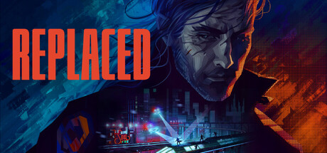

REPLACED
9/10
Avaliado em 28/11/2026 pelo Bora de Play
Zerei em cerca de 10 horas. Um dos melhores jogos que passaram pelo canal: a história lembra Blade Runner, a arte em pixel art 2,5D é maravilhosa e a jogabilidade é muito gostosa.
Minha opinião
Gráficos
A arte é o auge do jogo, junto com a história. É um visual em pixel art 2,5D muito caprichado: dá pra ver o cuidado que os desenvolvedores tiveram em cada tela. Qualquer cena dá um print que vira papel de parede.
Desempenho
Rodou liso no meu PC (AMD Ryzen 5 5600X, NVIDIA GeForce RTX 3060 Ti e 16 GB de RAM), sem problemas.
História
Muito boa. Você acompanha o R.E.A.C.H., uma IA presa num corpo humano, saindo do laboratório sem saber o que é o quê e ficando cada vez mais humano. Me lembrou muito Blade Runner: ele parece um replicante, e fica quase impossível separar o que é máquina do que é humano. São personagens com quem você se importa de verdade.
Jogabilidade
Muito legal e gostosa de jogar. O combate é ótimo, dá a sensação de estar num filme de ação em 2,5D. Alguns inimigos, como os snipers e o ninja, são mais chatos de enfrentar, e um ou outro puzzle me deixou na dúvida, mas nada que atrapalhe.
Dificuldade
Na medida certa. Não é fácil demais nem difícil demais.
Tempo de jogo
Cerca de 10 horas para zerar.
Áudio
A trilha e os sons combinam com o clima cyberpunk. Tem até rádio em que dá pra trocar as músicas.
Pra quem eu recomendo
Pra quem curte ficção científica, cyberpunk, Blade Runner, jogos com história forte e pixel art.
Compensa comprar?
Sim. Vale o preço cheio. É um daqueles jogos de estúdio menor que entregam arte, história e personagens incríveis.
Nota final
9/10. Um dos melhores jogos que passaram pelo canal. A história e a arte são maravilhosas, e a jogabilidade acompanha.